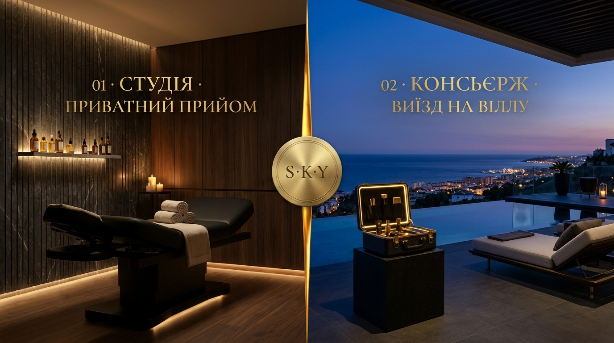

Концепт 06 · Чиста Архітектура Простору (Architectural Diptych)
Два Архітектурні Санктуарії: Темний Мармур & Тераса Вілли
Зліва (Малага Студія): Повна приватність без облич — темний рифлений мармур, тепле підлогове LED-підсвічування, кушетка, свічки, спокій і тиша 1:1.
Справа (Марбелья Консьєрж): Сутінкова тераса маєтку в Сьєрра-Бланка над Середземним морем, інфініті-басейн, відкритий карбоновий кейс консьєржа з золотими маніпулами.